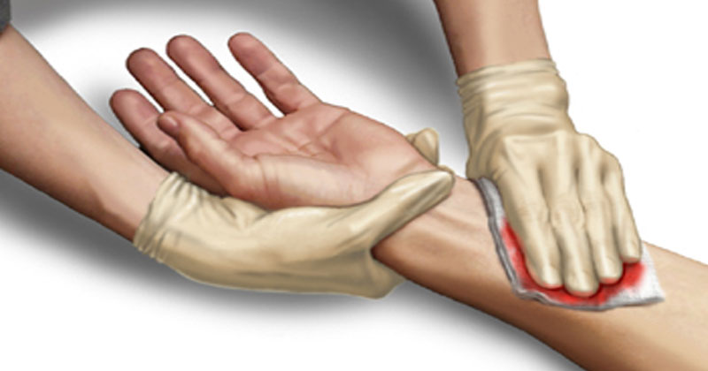

Instruções:
Após fazer como as instruções anteriores. Caso esteja com alto fluxo de sangue, ligue para emergência e siga as instruções:
1- Pressione a ferida com algum pano limpo ou gaze, até parar de sangrar.
2- Caso corte com algum objeto, não retire, pois pode causar uma nova hemorragia.
EM TODO CASO VÁ, À ALGUM HOSPITAL OU POSTO DE SAÚDE.